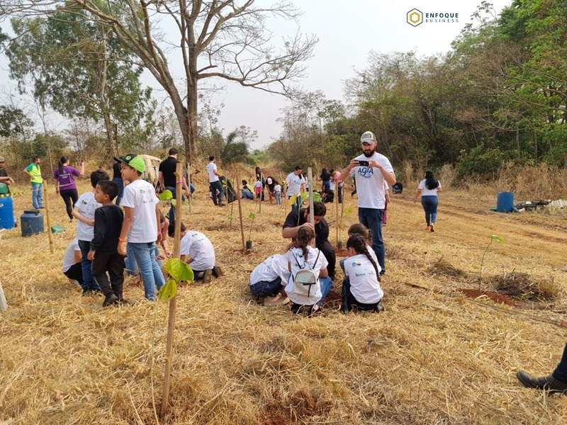

Noticias Verdes
Novedades sobre los esfuerzos locales y globales para proteger el planeta: de la reforestación y la conservación de la biodiversidad a la acción climática.
Más recientes
Mantente informado
Estar informado nos hace más conscientes y nos permite tomar mejores decisiones y contribuir positivamente al mundo que nos rodea. Las notas fueron publicadas por medios brasileños, en portugués.